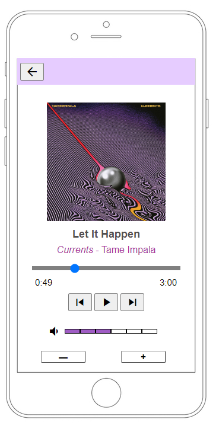
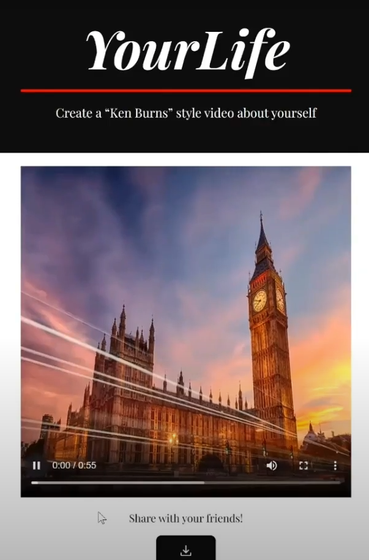

Project 1:
Using the skills learned within CS 330 - Human Computer Interaction, I built a displayable online music player that simulates everything a music player would do, apart from actually playing music. Yet, with a few simple additions, playable music could also be implemented. However, the project was more of a challenge in bridging together the new tools I learned in the class in conjunction with the multiple programming languages: JavaScript, CSS, and HTML.

Project 2:
Technology can be frustrating. Computers can be frustrating, too. Going through the pain of editing, narrating, and creating a documentary? FRUSTRATING!
Well fear no more! With YourLife, you can make your own personal documentary with a simple press of a button and a biography of anyone of your choosing, no matter how crazy or ridiculous their story is. Thanks to YourLife, you don’t have to tear your hair out from spending hours on editing just to make a simple documentary for a friend. Instead, our product streamlines the often wearisome process by doing all the editing, narrating, and stitching with the help of AI.

Home